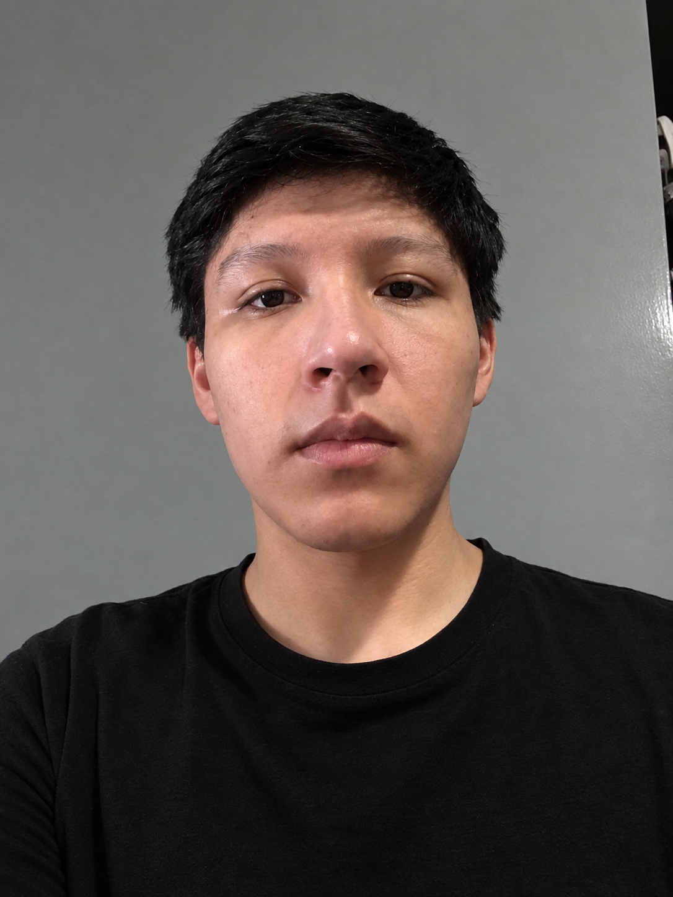

OptiFlow
OptiFlow
Transforma la gestión de tu óptica con OptiFlow
OptiFlow conecta pacientes con ópticas para reservar citas, seguir pedidos y mantener historiales clínicos.
Sin tarjeta · Te respondemos en 24 horas


OptiFlow
Lentes dorados en 3D, apoyados sobre un bloque blanco.
OptiFlow conecta pacientes con ópticas para reservar citas, seguir pedidos y mantener historiales clínicos.
Sin tarjeta · Te respondemos en 24 horas
Resultados clínicos y operativos respaldados por datos reales de digitalización oftalmológica.
tasa de inasistencia promedio en citas médicas sin recordatorios
menos ausentismo con notificaciones electrónicas automáticas
reducción en tiempo de documentación con sistemas digitales
Quiénes somos
Ofrecer una plataforma móvil que simplifique al máximo el proceso de búsqueda y reserva de citas ópticas, afianzando el vínculo entre el paciente y la óptica. Dotamos al optometrista de herramientas de notificación proactivas — recordatorios de citas y alertas de cumpleaños — para una comunicación más clara y oportuna.
Consolidarnos como la plataforma líder de agendamiento y fidelización para el sector óptico en Latinoamérica, siendo el punto de encuentro natural entre pacientes que buscan atención visual y ópticas que buscan construir relaciones duraderas con su comunidad — todo mediado por la conveniencia de un celular.
OptiFlow permite mejorar la eficiencia de los procesos de emisión de citas con clientes u órdenes de laboratorio, de tal forma que se ataca al problema principal que sufren las ópticas, la falta de CRM y falta de comunicación entre el personal, lo que generalmente deriva a expedientes de clientes perdidos, órdenes erróneas al laboratorio, tiempos de entrega largos, entre otros.
Herramientas ágiles y sencillas que aceleran la atención tanto en consultorio como en mostrador.
Agenda tu cita eligiendo modelo, fecha, hora y local — todo desde tu celular, sin desplazarte físicamente.
Receta y historial visual siempre disponibles en tu smartphone. Nunca más olvides tus especificaciones de lentes.
Sabe exactamente en qué etapa está la fabricación de tus lentes sin necesidad de llamar a la óptica.
Recordatorios automáticos de citas y cumpleaños de pacientes.
Asigna la gestión de tu agenda a un colaborador sin perder visibilidad ni control sobre las operaciones.
Visualiza y actualiza el estado de cada orden de trabajo con un solo toque desde tu dispositivo móvil.
Modelo SaaS escalable según el tamaño y necesidades de tu óptica.
Ideal para ópticas independientes que inician su digitalización.
S/ 49 /mes
Para ópticas en crecimiento que necesitan más control y visibilidad.
S/ 129 /mes
Para cadenas con múltiples sucursales y equipos completos de gestión.
S/ 299 /mes
Software Engineer
Sexto ciclo de Ingeniería de Software. Conocimientos en C++, Lua, Python y Java. Orientado al pensamiento lógico y soluciones óptimas.
Full Stack Developer
Experiencia en Java, Python, HTML, CSS y bases de datos. Participación en proyectos frontend y backend. Apasionado por nuevas tecnologías.

Software Developer
Conocimientos en Python, C++ y HTML. Comprometido con la ética, el trabajo en equipo y el desarrollo de soluciones de calidad.
Software Engineer
Conocimientos en C++, Python y Java. Proactiva y con disposición de generar un buen ambiente de trabajo en equipo.
Software Developer
Conocimientos en lógica de programación, bases de datos y desarrollo de aplicaciones. Responsable y proactivo.
Lo que piensan
Necesitaba automatizar recordatorios y permitir a mis clientes consultar sus pedidos. OptiFlow cubrió exactamente esa necesidad desde el primer día.
Logré automatizar recordatorios de citas y seguimiento de pedidos, mejorando la organización y rapidez de atención de mi óptica notablemente.
Rastrear el estado de fabricación en tiempo real es increíble. Es como el seguimiento de Shalom pero para mi receta visual.
Recibo notificaciones automáticas y ya no tengo que llamar para saber si mis lentes están listos. La agilidad en la entrega es lo que más valoro.
Tengo mi receta siempre en el celular y recibo notificaciones por WhatsApp. Ya no olvido los detalles de mis lentes ni cuándo volver al control.
Digitalizar el historial de refracción y el estado de biselado redujo a cero los errores entre el consultorio y el taller óptico.
No. OptiFlow funciona desde el celular y el navegador; tu equipo empieza el mismo día.
Sí. Puedes subir, bajar o cancelar antes del siguiente ciclo de cobro.
Solo el personal que tú autorizas accede a la información, y nunca la vendemos.
Tu cita óptica ideal, en tu bolsillo
Sin tarjeta · Te respondemos en 24 horas